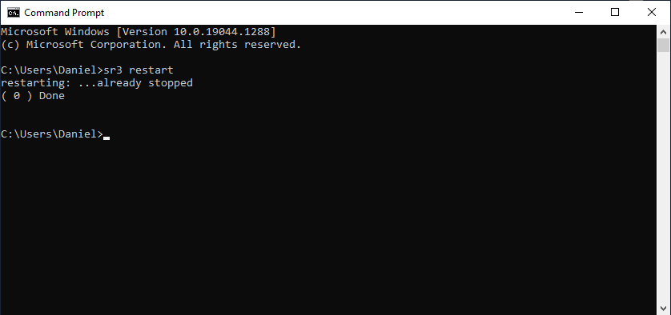
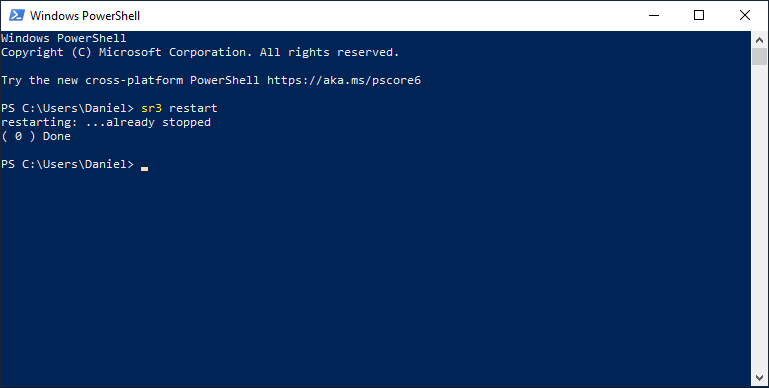
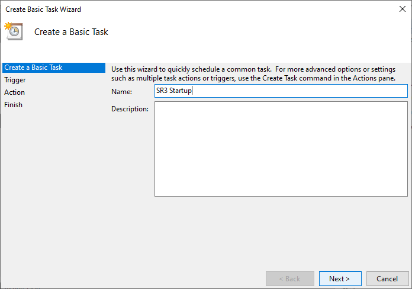
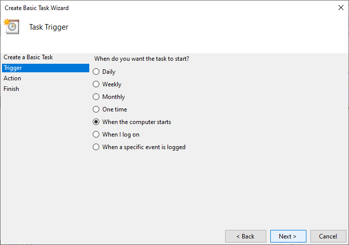
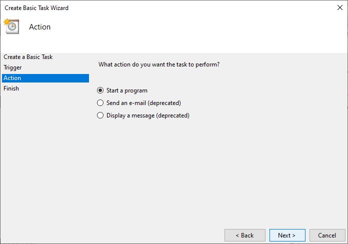
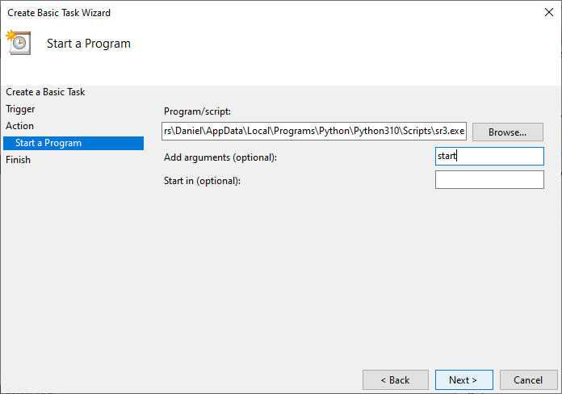
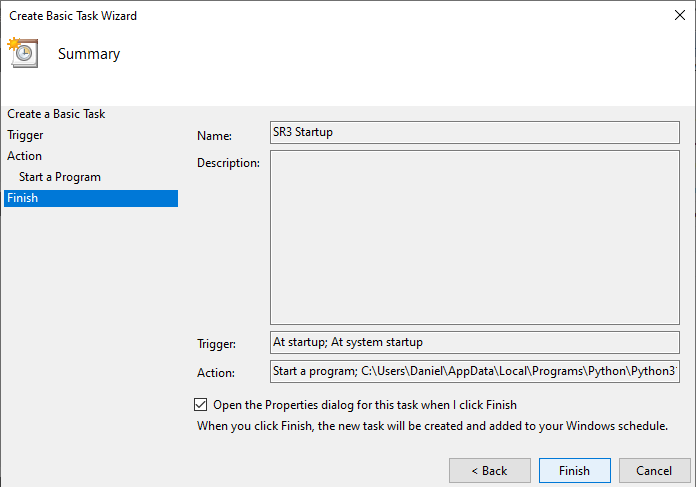
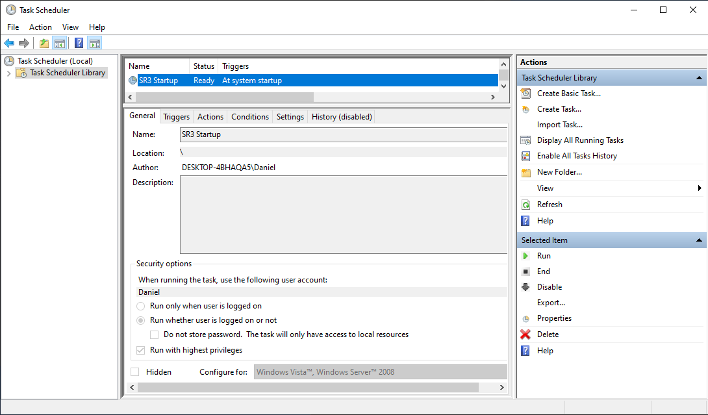

Windows user manual
This document teaches novice user with Python on Windows how they could easily run Sarracenia in various ways. The screenshots were taken from Windows Server 2012 R2 Standard edition. Feel free to create issues if you believe that this document could be enhanced with one (or more) important case(s).
Running Sarracenia with a Command Prompt
From the Start Menu:
Click on Sarracenia (it will execute sr3.exe restart):

This will pop Sarracenia’s Command Prompt, start Sarracenia processes as instructed by your configurations and show logging information.
Keep this window alive until you are done with Sarracenia. Closing it or typing ctrl-c will kill all Sarracenia processes. You may also want to restart Sarracenia which will stop those processes cleanly.
From a Windows Powershell session:
Launch a Powershell  session and type this command at the prompt:
session and type this command at the prompt:
sr3 restart
This will start Sarracenia processes as instructed by your configurations and show logging information
Keep this Powershell session alive until you are done with Sarracenia. To stop Sarracenia you may type:
sr3 stop
This will stop all Sarracenia processes cleanly as would do a restart. Closing this window will also kill all processes.
From Anaconda Prompt:
Run this command:
activate sr3 && s3r restart
Running Sarracenia without a Command Prompt
Here is a case where someone (like a sysadmin) needs to run Sarracenia without a Command Prompt and ensure that the system starts at Windows startup. The obvious way of doing it would be from the Task Scheduler.
From the Task Scheduler:
Open Task scheduler:

Select Create Basic Task… from the action panel on the right:

This will launch the Create Basic Task Wizard where you …
Fill the name:
Choose the trigger:
Choose the action:
Define the action:
Review the task and choose Finish:

Open the Properties dialog and choose Run whether user is logged on or not and Run with highest privileges:

The task should now appear in your Task Scheduler Library with the status Ready.
Then, you may run it immediately with the  button.
button.